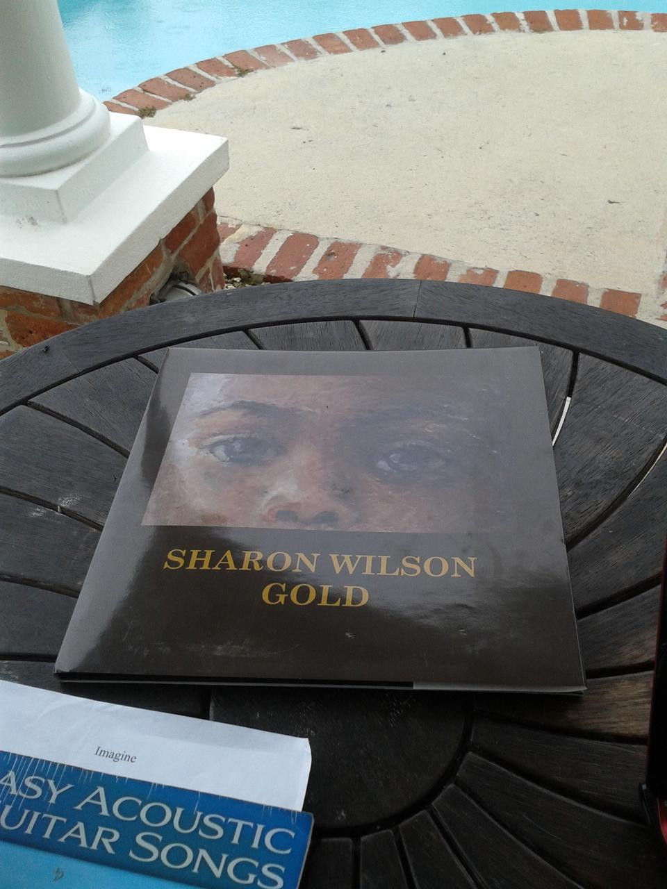

Sharon Wilson
If you visit Bermuda you will likely end up at Horseshoe Bay at some point during your trip.
This is one of the biggest and busiest of the South Shore beaches. Whenever there is a long weekend things will be happening on Horseshoe Bay, such as the annual Good Friday flying of kites.
From Horseshoe Bay you can walk along the coast, past a number of smaller and quieter beaches and coves. Often you will be able to find a beach to yourself, with pink sands, turquoise water and tropical fish swimming around the reefs.
At the top of the driveway that leads down to Horseshoe Bay you will find Southampton Rangers football and cricket club. On the weekend you might be able to watch some cricket and get some refreshment.
There is also a restaurant, Gulf Stream where you can get a bite to eat.
Less than a couple of hundred yards to the west you will find a small side-road, Turtle Place. This is where local artist Sharon Wilson lives. Her home is also her studio and her gallery.
If she is open for visitors she usually puts out a sandwich board at the end of the road, sometimes with a couple of balloons attached. In that case, you are in luck. She will welcome you to her home and let you discover her art.
I have a copy of a book she produced, here is the cover:
My cat seems to like the book too:
There is a story behind everything she paints. She will tell you some of those stories, but also let you find your own story.
Here is another picture, it has a good story too: